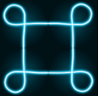
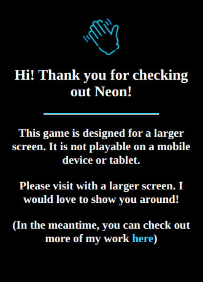

Built Summer 2020
THE STORY
Sometime last spring I could feel myself graduating. Not in the concrete definition of the word, like with a cap-and-gown, but in the sense of moving to the next level. I was graduating beyond the role of “junior” developer.
How could I tell? For starters, I was getting bigger and bigger projects at work – projects that were measured in weeks and months instead of hours and days. These were projects that required me to do a lot more research, create a roadmap, and set up meetings between different teams.
I also started noticing that I was being asked for input on a lot of different issues. I was asked to weigh in on the decision of whether or not to incorporate tracking software on our site. I was asked what I thought about new features for our product, regardless of whether I would be working on them. I was expected to have an opinion beyond just making changes to the code.
I was graduating. And let me be clear – this whole distinction between “junior” and “mid-level” is completely artificial. Things are not so black and white. There are definitely still days where I feel green, green, green. But I noticed I was working in a wider orbit. And I wanted to build something that reflected this graduation. Something that stretched my comfort zone but also showcased my evolution.
So I built neon.
Neon is my revival of a cherised game from my high-school years, a flash game called “Moebius Challenge.” It was an addictive puzzle game where you had to rotate tiles to create loops while under time pressure. I couldn’t find any code or documentation for the original game, or a securely-hosted version of it. All I could find was that the original author was someone named Xiao Fred1. But I longed to play Moebius again.
I wonder if I could build it, I thought. I wonder if I could make it look…even cooler.
The most interesting piece of the design puzzle was calculating when a loop is created. You have a 9x9 board with ‘corner’ and ‘straight’ tiles, and every time the user clicks on a tile it rotates. The program needs to know when the tiles are arranged to make a closed loop. This is tricky because each tile is pointing in two directions, and a single click changes the whole board.
The solution was recursion. When a tile is clicked, create a "path" by checking the tile’s neighbor to see if the two tiles link up. If they do, follow the neighboring tile to its neighbor and see if those two link. The base case is achieved when you reach out to the neighbor and find a link, only to realize that the neighbor is the very first tile in the path. That’s a loop! If at any point you reach out to a tile’s neighbor and there is no link, the recursive function ends.
I’m sure I could have figured out this recursive function a year ago, as a “junior”. But being a developer is about much more than algorithms. For example, Neon was never meant for a mobile device, so what if somebody visited the site on their phone? Did I want them to just see a broken website? That’s not very professional. So I built a mobile welcome-screen to handle the situation:
What if somebody visited and didn’t understand the game? I needed an instructions page. What about when somebody paused the game? I needed a pause screen. What about if somebody clicked on the instructions while the game is going? Do I want to have the game keep running in the background or should it automatically pause? As I mature as a developer I realize that graduating beyond "junior" work is as much about getting better at asking these what ifs as it is about getting better at writing software. Thanks for reading!
Epilogue
People have asked me about the overall look of the game, and how I got that neon “effect” to work. I could write an entire article about creating the glass tubes of neon. The short answer is that I drew them on the computer. I used Inkscape, an open source graphic editing platform, and just watched a bunch of tutorials. And there is no animation happening. When a loop is formed, the image of the inert tube of glass gets replaced by an identical piece of “lit” glass. It’s the old switcheroo. Like most things I create, if I can find a solution using the most basic tools available, then that’s what I will do. (I mean, did you read my article about this very website?)
It took longer than I wanted to create some realistic-looking neon tubes that connected perfectly to one another and ‘lit up’ when looped, and I’m sure a skilled designer could have done better, but I’m happy with how it turned out.